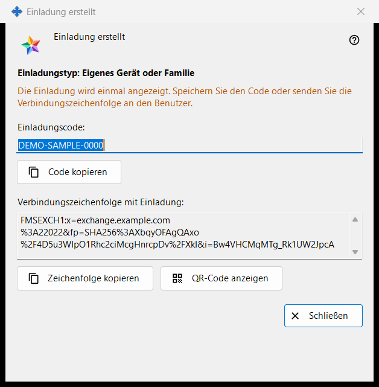
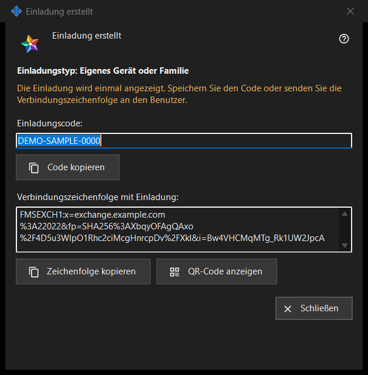

Einladung erstellt
Verwendungszweck
Dieses Fenster zeigt eine neue Einladung einmalig an, direkt nach «Anlegen» im Fenster «Einladung erstellen». Es enthält den Einmalcode und, sofern das Programm des Austauschservers sie erstellen kann, eine Verbindungszeichenfolge, die den Code bereits enthält.


In dieser Reihenfolge
- Prüfen Sie die Zeile «Einladungstyp: ..».
- Klicken Sie auf «Code kopieren», auf «Zeichenfolge kopieren» für die Zeichenfolge mit der Einladung oder auf «QR-Code anzeigen».
- Geben Sie das Ergebnis über einen vertrauenswürdigen Kanal an die Person weiter.
- Klicken Sie auf «Schließen». Derselbe Code wird nicht noch einmal angezeigt.
Die Elemente
Typ und Warnung
Die fette Zeile «Einladungstyp: Eigenes Gerät oder Familie» nennt den gewählten Typ. Die Zeile in der Warnfarbe lautet «Die Einladung wird einmal angezeigt. Speichern Sie den Code oder senden Sie die Verbindungszeichenfolge an den Benutzer.» Beim Schließen des Fensters werden Code und Zeichenfolge daraus gelöscht. Ist eines davon verloren gegangen, widerrufen Sie die Einladung in der Liste und erstellen eine neue.
Einladungscode
«Einladungscode:» zeigt den Code in einem schreibgeschützten Feld. «Code kopieren» kopiert ihn als Geheimnis, am Zwischenablageverlauf von Windows (Win+V) und an der Cloud-Zwischenablage vorbei, und die Zeile darunter meldet «Einladungscode in die Zwischenablage kopiert.» oder «Code konnte nicht in die Zwischenablage kopiert werden.»
Verbindungszeichenfolge mit der Einladung
«Verbindungszeichenfolge mit Einladung:» erscheint nur, wenn die Zeichenfolge erstellt werden konnte. Sie nennt den Server und enthält den Code; behandeln Sie sie daher wie den Code: «Zeichenfolge kopieren» kopiert sie ebenfalls als Geheimnis. Das Passwort Ihres Kontos enthält sie nicht.
QR-Code
«QR-Code anzeigen» öffnet ein Bild der Zeichenfolge mit der Einladung. Jeder, der es sieht, kann die Einladung verwenden; zeigen Sie es daher nur der Person, für die es gedacht ist. Lässt sich das Bild nicht erstellen, lautet die Zeile «Der QR-Code ist derzeit nicht verfügbar.»
Was die andere Person tut
Im Fenster für das Austauschkonto («Anmelden..») fügt die Person die Zeichenfolge mit «Einfügen» ein oder öffnet eine gespeicherte Datei. Eine Zeichenfolge mit Einladung schaltet das Fenster auf die Registrierung um: Die Person wählt ein Login, gibt zweimal ein Passwort ein und klickt auf «Konto erstellen». Eine falsche oder bereits verwendete Einladung oder ein vergebenes Login wird mit einer Meldung abgelehnt.
Schließen
«Schließen» beendet das Fenster und löscht Code und Zeichenfolge daraus. Sonst wird hier nichts gespeichert.
Managereinstellungen · SFTP-Freigabeeinstellungen · Einstellungen des Austauschservers